Seekordses praktikumis tutvume R-is jooniste tegemise võimalustega, eelkõige paketiga ggplot2.
R-i üks tugevaid külgi on tema jooniste tegemise võimekus. Toome siinkohal esmalt ära paar baaspaketi joonistamise käsku:
# andmed = Massachusettsi osariigi valikuuringu andmed
par(mfrow = c(1, 2), cex = 0.6) # see rida võimaldab kaks joonist kõrvuti panna
hist(andmed$AGE, xlab = "Vanus", ylab = "Isikuid", main = "")
plot(andmed$WKHP, andmed$WAGP, xlab = "Töötunde", ylab = "Aastapalk",
col = as.numeric(andmed$SEX)+1)
legend("topleft", pch = 19, col = 2:3, legend = levels(andmed$SEX))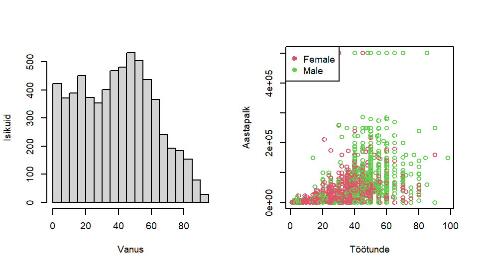
ggplot2 ja graafikute grammatikaKuigi R-i baasgraafika on peensusteni konfigureeritav ja sellega saab teha ülikeerulisi jooniseid, peab tüüpilisemate andmeid kirjeldavate jooniste saamiseks tegema palju lisatööd ja -arvutusi, nagu ülalolevastki näha. Näiteks barplot(.) käsk soovib argumendiks saada sagedustabelit, mis tuleks siis eelnevalt table(.) käsu abil arvutada.
R-i kasutajate hulgas on muutunud populaarseks pakett ggplot2, mis võimaldab lihtsamini joonistada andmestikke kirjeldavaid jooniseid, sealjuures on tulemused visuaalselt üsna apetiitsed. Nimelt on ggplot2 arendamisel pandud tähele statistiku Edward Tufte soovitusi värvide valikul ning eriti Leland Wilkinsoni struktureeritud käsitlust andmejoonistest, nn graafikute grammatikat (grammar of graphics).
Üldised soovitused (Tufte):
Graafikute grammatika (Wilkinson) on kontseptsioon, mille kohaselt graafiku ehitamisel ei tuleks lähtuda mitte graafiku tüübist, vaid andmetest. Iga joonis koosneb järgnevatest osadest:
Paketis ggplot2 on kaks graafikute tekitamise põhikäsku: ggplot(.) (keerukam) ja qplot(.) (quick plot, lihtsam). Käsk qplot(.) peaks käepärasem olema neile, kes on varem kasutanud R-i baasgraafika käske, kuid üldiselt on soovitav ära õppida siiski ggplot(.) kasutamine.
Paketi ggplot2 käskude jaoks on kõige põhjalikum dokumentatsioon internetis aadressil: http://ggplot2.tidyverse.org/reference/. Ühtlasi leidub mitmeid inglisekeelseid raamatuid, mis õpetavad ggplot2 peensusi. Kaks tasuta e-raamatut on näiteks W. Chang’i R Graphics Cookbook ja K. Healy Data visualization.
Paketi ggplot2 põhimõte on joonise ülesehitamine kihthaaval: esmalt joonise põhi ja sellele lisatakse ehk liidetakse (kasutades + märki) kihtidena erinevad kujundused. Näiteks geomeetriliste elementide (punktid, jooned, tulbad jne) lisamiseks/muutmiseks on käsud geom_<elemendi_nimi>.
Alustame hajuvusdiagrammist. Andmestikus maakonnad on info USA 5 osariigi mõnede maakondade kohta (425 maakonda). Uurime kõrgharidusega inimeste osakaalu ja keskmise sissetuleku vahelist seost. Mõistlik on seda kujutada hajuvus-diagrammina, kus iga punkt on maakond ning ühel teljel on kõrgharidusega inimeste osakaalu märkiv tunnus bachelor ja teisel teljel keskmise sissetuleku tunnus per_capita_inc:
mk <- read.table("https://github.com/Rkursus/mooc/raw/main/data/maakonnad.txt", sep = " ", header = T)
ggplot(data = mk, mapping = aes(x = bachelor, y = per_capita_inc)) + geom_point()
# joonise põhi + kujunduselement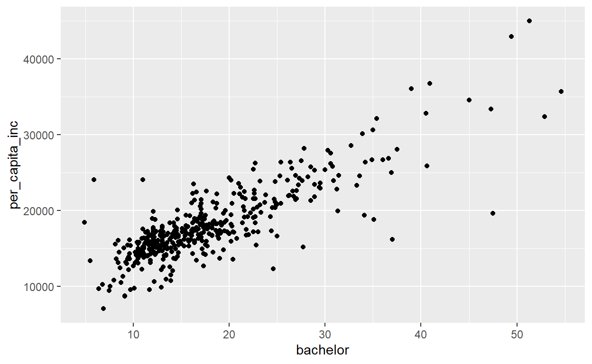
Tasub tähele panna käsku aes(.) (nagu aesthetics), mida ülaloleval joonisel funktsiooni argumendile mapping ette anti. Nimelt aes(.) funktsioon aitab siduda graafilisi elemente andmestikus olevate tunnustega.
Lisaks koordinaatidele saab üks punkt veel edasi anda infot näiteks värvi, kuju ja suurusega. Selleks seome funktsiooni aes abil kolm tunnust andmestikust vastavalt värvi colour, kuju shape ja suuruse size argumentidega:
ggplot(data = mk, mapping = aes(x = bachelor, y = per_capita_inc)) +
geom_point(aes(colour = Poverty_factor, shape = State, size = pop_estimate))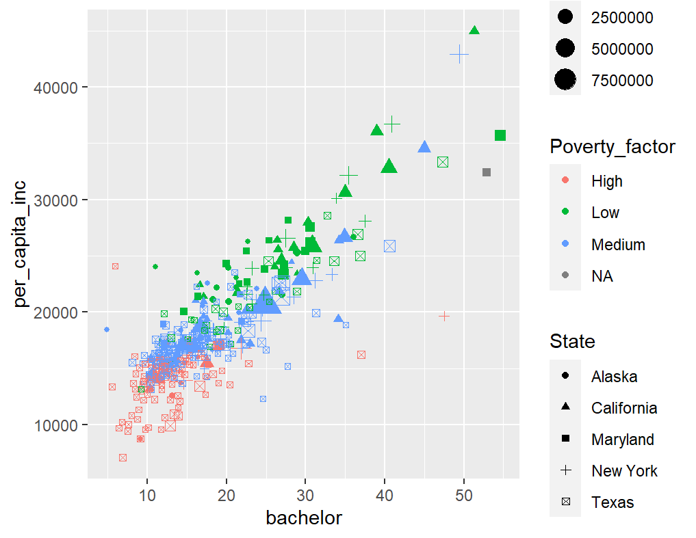
Igat tüüpi tunnuseid ei saa suvaliste jooniseühikutega seostada, näiteks arvulise tunnusega ei saa siduda punkti kuju (nii palju erineva kujuga punkte pole lihtsalt olemas). Samas aga saab värviga kujutada nii faktortunnust (nt osariik) kui ka arvulist tunnust (nt kõrgus merepinnast). Täpsemini on hajuvusdiagrammi ühel punktil järgmised omadused, millega saab infot edasi anda:
x – (kohustuslik) asukoht x-teljel [num, chr, logical, Factor]y – (kohustuslik) asukoht y-teljel [num, chr, logical, Factor]alpha – läbipaistvus, väiksem väärtus tähendab suuremat läbipaistvust [num, chr, logical, Factor]colour – värvus [num, chr, logical, Factor]fill – sisemuse värvus (ainult mõne shape väärtuse korral) [num, chr, logical, Factor]shape – punkti kuju (kuni 25 erinevat + ise määratavad sümbolid) [chr, logical, Factor]size – punkti suurus [num]link <- "https://github.com/Rkursus/mooc/raw/main/data/"mk <- read.table(paste0(link, "maakonnad.txt"), sep = " ", header=T)high_scl) ja ülikooli lõpetanute protsendi (bachelor) vahel. Kas on näha mingit seost?State) kohta käiv info; katseta erinevaid variante (värv, kuju jne)pop_estimate)Graafiku teljed võivad olla seotud ka diskreetse tunnusega (nt Factor), näiteks võiksime maakondi kujutades siduda x-teljega osariigi:
ggplot(data = mk, aes(x = State)) + geom_bar()Tekkis tulpdiagramm, kus iga tulp näitab maakondade arvu vastavas osariigis. Ent maakonnad ühe tulba sees võivad olla erinevad, näiteks vaesustaseme (Poverty_factor) poolest. Selleks võib iga tulba vastavate maakondade arvu järgi ära värvida. Kuna iga joonise element koosneb piirjoonest ning sisemisest osast, tuleb vastava osa värvi muutmiseks kasutada kas argumenti colour või fill:
ggplot(data = mk, aes(x = State)) + geom_bar(aes(fill = Poverty_factor))Kui on soov esitada maakondade kaupa vaesuse määra osakaalud (mitte absoluutarvud), siis peab kasutama lisaargumenti position = "fill", ühtlasi on siis mõistlik muuta y-telje nimetus:
ggplot(data = mk, aes(x = State)) +
geom_bar(aes(fill = Poverty_factor), position = "fill") +
ylab("osakaal")Sageli esitatakse tulpdiagrammi tulbad horisontaalselt, selle saavutamiseks tuleb käsk kirja panna sama moodi kui enne, aga lisada tuleb joonise pööramine:
ggplot(data = mk, aes(x = State)) + geom_bar() + coord_flip()Praegu andsime tulpdiagrammi moodustamises ette tunnuse nö toorväärtused, vahel on aga tulpdiagramm vaja moodustada valmis sagedustabeli põhjal. Selleks, et tulpade kõrgus määrata mingi tunnuse väärtuste põhjal tuleks geom_bar argumendiks lisada stat = "identity"
sagedustabel <- as.data.frame(table(mk$State))
ggplot(sagedustabel, aes(x = Var1, y = Freq)) + geom_bar(stat = "identity")Birth_factor) ja vaesuse taseme (Poverty_factor) vahelist seost.per_capita_inc) erinevates osariikides. Tulpdiagrammiga sarnane graafik on histogramm, mis sobib arvulise tunnuse jaotuse iseloomustamiseks
ggplot(mk, aes(x = per_capita_inc)) + geom_histogram()## `stat_bin()` using `bins = 30`. Pick better value with `binwidth`.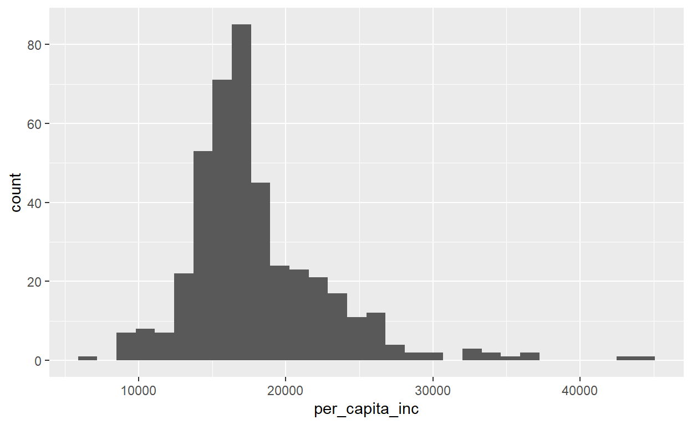
Kui uurime tekstiliste väärtustega ja pideva arvutunnuse vahelist seost, siis sobib kasutada karpdiagrammi:
ggplot(data = mk, aes(x = State, y = per_capita_inc)) + geom_boxplot()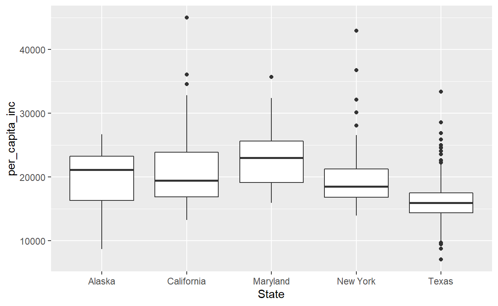
Tunnuse jaotuse võrdlemiseks gruppides sobib ka tihedusfunktsiooni hinnagu graafik
ggplot(data = mk, aes(x = per_capita_inc, fill = State)) + geom_density(alpha = 0.5)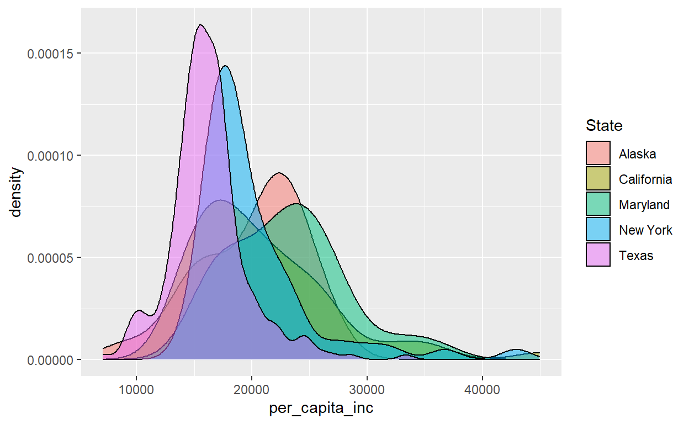
Erinevaid elemente saab joonisel ka korraga kujutada. Näiteks aegridade puhul esitada koos mõõtmispunktid ja neid ühendav joon
aeg <- 1:12
tulem <- c(9, 4, 3, 5, 6, 8, 8, 15, 26, 29, 24, 23)
andmed <- data.frame(aeg, tulem )
ggplot(andmed, aes(x = aeg, y = tulem)) + geom_line( ) + geom_point()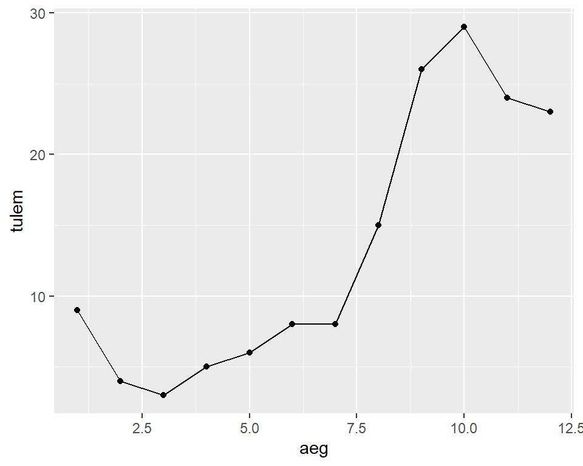
Joondiagramm mitmes grupis:
tulem <- c(tulem, c(9:20))
andmed2 <- data.frame(aeg = c(aeg, aeg), tulem, grupp = rep(c("platseebo", "ravim"), each = 12))
ggplot(data = andmed2, aes(x = aeg,y = tulem, colour = grupp)) +
geom_line() + geom_point() 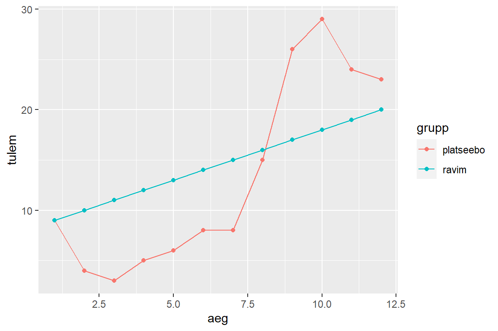
Mõnikord harvem muidugi võib olla soov esitada pideva ja kategoorilise tunnuse vahelise seose kirjeldamiseks mitte karpdiagramme, aga näiteks keskmisi koos usaldusvahemikega. Sellistest keerukamatest võimalustest tuleb hiljem juttu.
Väike kokkuvõte joonise tüüpide valikust:
| Tunnus1 | Tunnus2 | Sobivad joonised | geom_<?> |
|---|---|---|---|
| pidev/arvuline | - | histogramm (tulbad) | histogram |
| pidev/arvuline | - | tihedus | density |
| kategooriline | - | tulpdiagramm (tulbad) | bar |
| kategooriline | kategooriline | tulpdiagramm (tulbad) | bar |
| pidev/arvuline | pidev/arvuline | hajuvusdiagramm (punktid) | point |
| pidev/arvuline | kategooriline | karpdiagramm (karbid) | boxplot |
| pidev/arvuline | aeg vms järgnevus | joondiagramm (jooned) | line |
bachelor histogramm.high_scl jaotust erinevates osariikides, kasutades karpdiagrammi.visiidid <- read.table(paste0(link, "visiidid.txt"), sep = "\t", header = TRUE) Tee joondiagramm vererõhunäitudele (x-teljel aeg). Värvi jooned vastavalt inimese soole. Soo tunnuse saamiseks liida visiitide andmestik isikuandmete tabeligainimesed <- read.table(paste0(link, "isikud.txt"), sep = "\t", header = TRUE)Sageli on mõistlik ühe suure ja kirju pildi asemel joonistada palju väikeseid sarnase sisuga pilte. Selmet erinevate osariikide maakondade vaesus- ja haridustaseme seost ühel ja samal pildil kujutada, võiks seda iga osariigi jaoks teha eraldi. Joonise tahkudeks jagamiseks saab kasutada käsku facet_wrap. Sellele argumendile tuleb väärtus anda nn valemi kujul: ridadeks_jagav_muutuja ~ veergudeks_jagav_muutuja. Ühe neist muutujatest võib ka ära jätta:
ggplot(data = mk, aes(x = bachelor, y = perc_poverty)) + geom_point() +
facet_wrap(facets = ~State)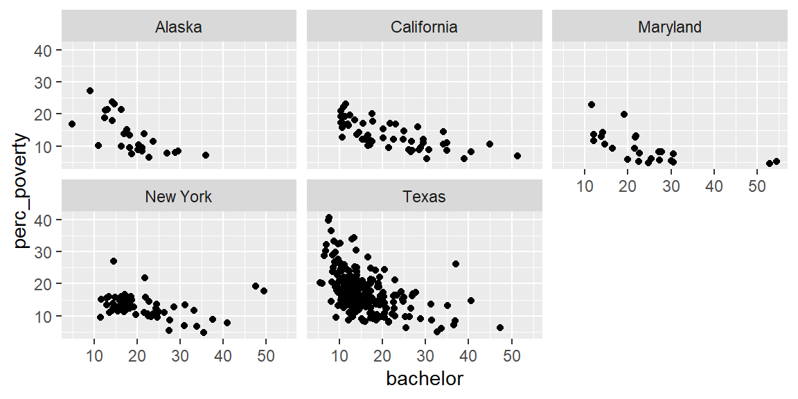
Teine sarnane käsk on facet_grid:
ggplot(data = mk, aes(x = bachelor, y = perc_poverty)) + geom_point() +
facet_grid(facets = females_percent > 50 ~ State)high_scl ja bachelor) erinevate Birth_factor tasemete kaupa. 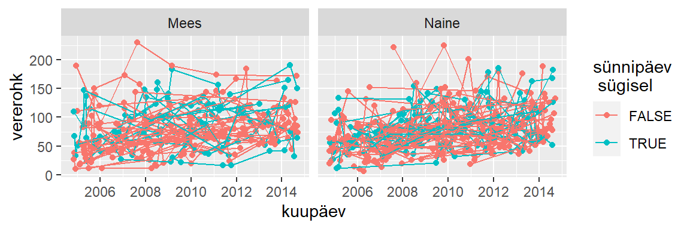
Paketiga ggplot2 koostatud jooniseid saab salvestada objektina töölauale (st omistada joonis muutujale); valmisolevaid jooniseid saab seetõttu lihtsasti muuta ja täiendada. Praktikumi alguses vaatasime juba hajuvusdiagrammi punktidele värvi lisamist. Teeme selle korra veel läbi, kasutades ka võimalust joonis objektina salvestada
p <- ggplot(data = mk, aes(x = per_capita_inc, y = unemployment_rate)) +
geom_point()# tekitatakse joonise objekt, ei kuvata
p # kuvatakse joonis
p + geom_point(mapping = aes(colour = State)) # lisame punktidele värvi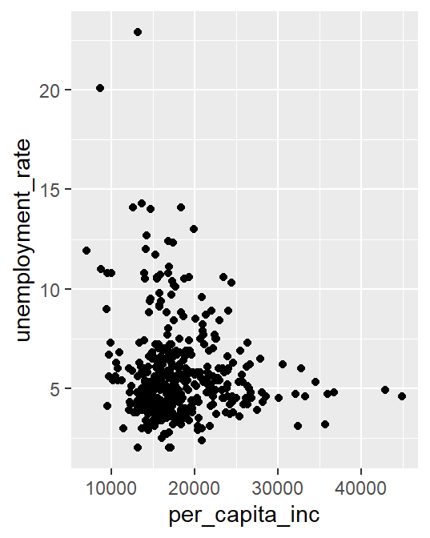 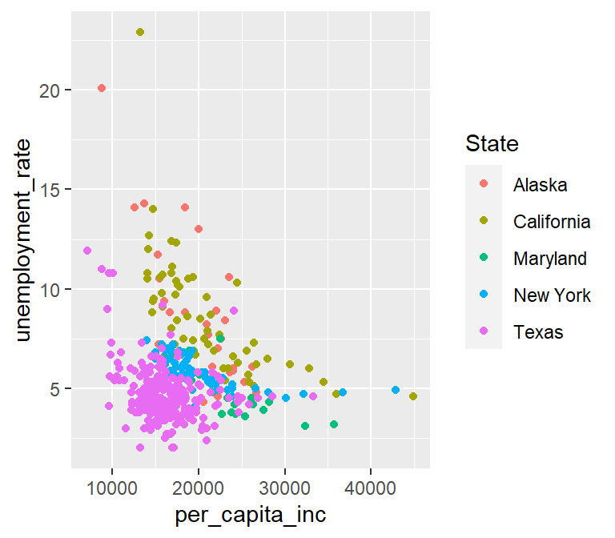
Kindlasti ei tohi unustada käsku aes(.) (aesthetics), mis aitab siduda graafilisi elemente andmestikus olevate tunnustega. Kui aes(.) funktsiooni ei kasutaks, otsitaks vastavate argumentide väärtuseid mitte andmestikust, vaid töökeskkonnast:
p + geom_point(colour = State) # objekti State otsitakse töökeskkonnast ja ei leita## Error in layer(data = data, mapping = mapping, stat = stat, geom = GeomPoint, : object 'State' not foundJoonisele saab lisada ka uusi elemente, näiteks regressioonikõveraid või teksti. Uute elementide lisamisel võib ette anda ka uue andmestiku argumendiga data:
p + geom_smooth(method = lm) + # lisatakse siluja (praegu lineaarne regressioon)
geom_text(data = mk[c(34, 48, 65), ], mapping = aes(label = County), size = 3,
colour = "red", hjust = 1, vjust = 0)## `geom_smooth()` using formula 'y ~ x'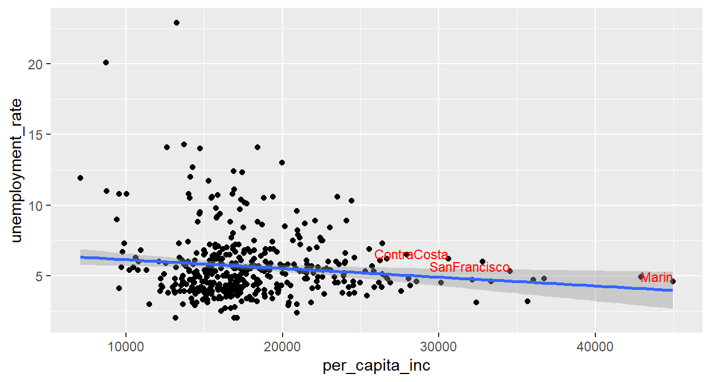
Kui joonisele on vaja lisada mingeid üksikuid detaile või märkusi, mis ei tulene enam otseselt kasutatud andmestikust, siis saab seda teha käsu annotate(.) abil:
p +
annotate("rect", xmin = 2*10^4, xmax = 4*10^4, ymin = 15, ymax = 25,
fill = "lightblue", alpha = 0.3, colour = "blue") +
annotate("segment", x = 3.5*10^4, xend = 3*10^4, y = 12, yend = 20,
arrow = arrow(ends = "last", angle = 10)) +
annotate("text", x = 3.5*10^4, y = 12, label = "vaata\n siia", hjust = 0, vjust = 1)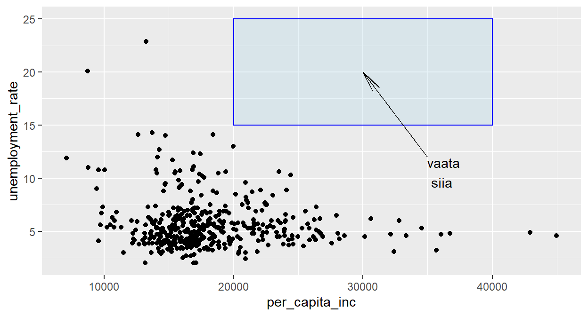
Eelnevalt oli mainitud, et tunnused, mida tahame joonisel graafiliste elementidega siduda tuleks esitada läbi aes() käsu. Juhul, kui tahame näiteks hajuvusdiagrammi punktide värvi määrata mitte tunnuse põhjal muutuvana vaid hoopis fikseerida, siis tuleks värvi argument just aes(.) käsust välja jätta, sest vastasel juhul võib tulemus vahel ootamatu olla. Lisaks lisatakse joonisele legend, mis ühe värvi fikseerimise korral mõtet ei oma. Võrdle järgmist koodi ja tulemusi:
p + geom_point(color = "blue")
p + geom_point(aes(colour = "blue")) 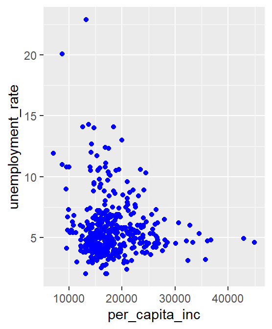 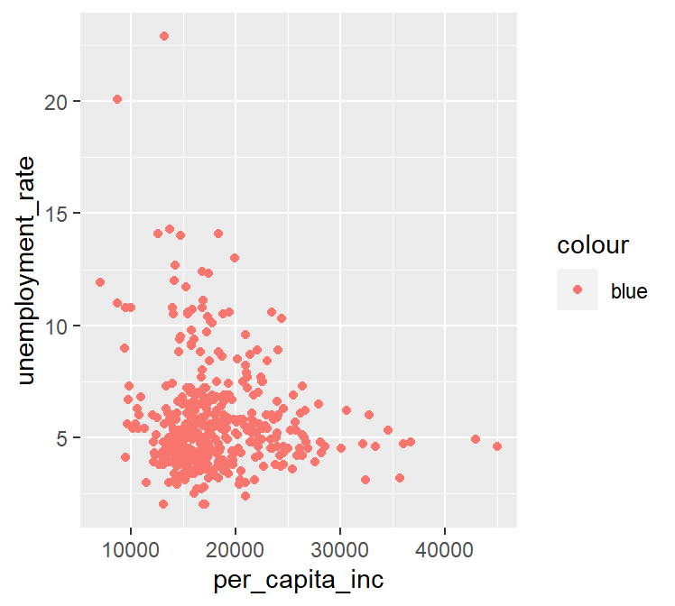
Ülesannetes kasuta USA viie osariigi maakondade andmestikku mk.
high_scl ja bachelor vahel.geom_vline(.))ggplot2-ga tehtud jooniseid saab salvestada käsuga ggsave(.). Kui anda käsule vaid faili nimi (koos laiendiga), siis salvestatakse viimati valmistatud joonis. Kui argumente widht ja height ei kasuta, siis joonise mõõtmed võetakse joonise akna järgi.